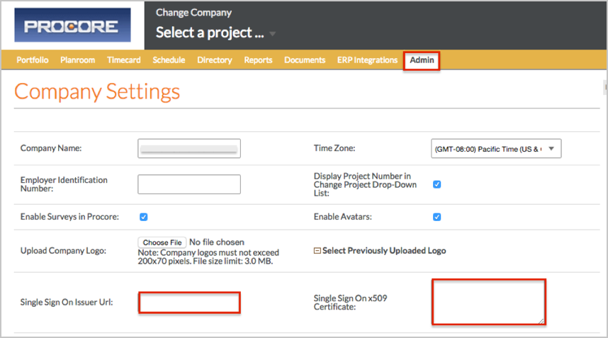
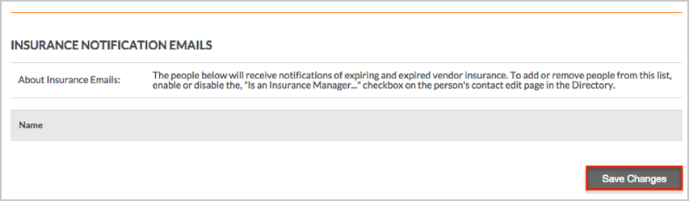

Login to Procore as an administrator.
Navigate to the Company Admin tab, then enter the following (screen shot at end of step for reference):
Single Sign On Issuer URL: Copy and paste the following:
Sign into the Okta Admin Dashboard to generate this variable.
Single Sign On x509 Certificate: Copy and paste the following:
Important: Do not copy the BEGIN CERTIFICATE and END CERTIFICATE parts of the certificate, only the text inbetween.
Sign into the Okta Admin Dashboard to generate this variable.

Scroll to the bottom of the page and click the Save Changes button.

Done!
Notes:
IdP-initiated flows are supported.
SP-initiated flows and Just In Time (JIT) provisioning are not supported.